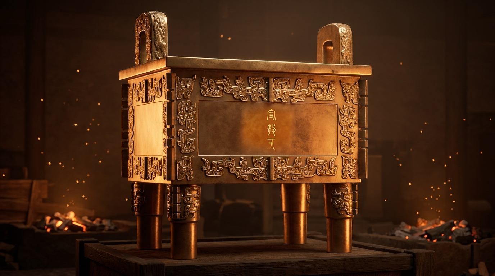
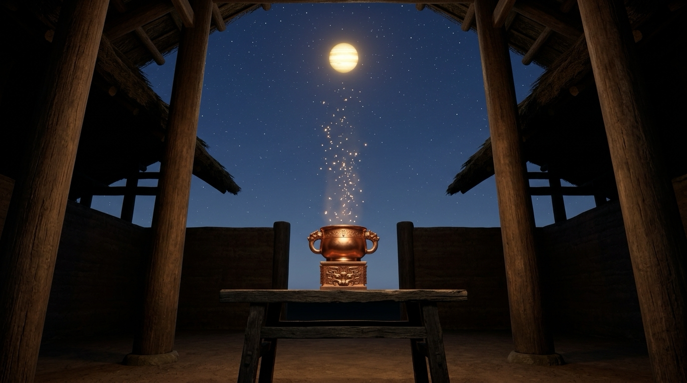

WORKBENCH 01 · STORYBOARD & UE5 / 4D MOTION
4D VR 构图分镜导演审片工作台
包含全片 17 张考古真值校核 16:9 构图分镜、32 个工业级精细拍子（B01–B32）、VR 舒适角与三分法安全框叠加、5 处 UE5 隐藏流式加载窗、4D 动感座椅 Pitch/Yaw/风/热/震参数及商周旁白三版对比。

WORKBENCH 02 · VOICEOVER, SCORE & 360° SFX
声音配音、配乐总谱与空间音效工作台
专供进棚配音师、配乐师与混音师使用：26 条锁定时间码人声 Cue（全句 ≤ 4.49 字/秒防赶口）、分角色筛选与一键导出 .TXT、棚内大字提词模式、12 组考古生僻字正音红线、7 幕配器 BPM 总谱与 9 处 4D 座椅硬锁帧点。